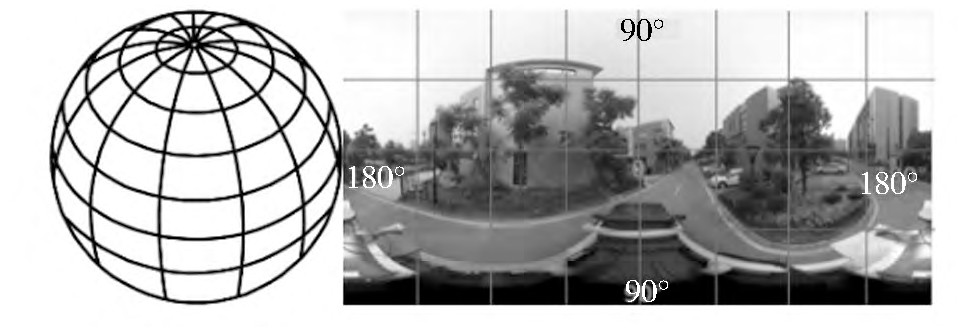
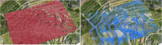

 |
Research on Panorama Image Map Service on iOS Mobile Device, Geography and Geo-Information Science 2016 Proposed a construction method of the IOS oriented panorama image map service paper / bibtex |
 |
A feature preserving algorithm for point cloud simplification based on hierarchical clustering, Geoscience and Remote Sensing Symposium. IEEE, 2016 Proposed a feature preserving algorithm for point cloud simplification based on hierarchical clustering with the surface feature description. paper / bibtex / code / website / poster |